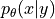
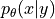
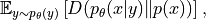
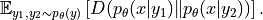
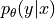

Quick start on gemclus¶
We provide here a short description of the GEMINI clustering package and hints about what it can do or not.
Note
For more details on the definition of GEMINI and its performances, please refer to the original publication by Ohl et al [1].
What is GEMINI¶
GEMINI stands for Generalised Mutual Information, a novel type of information theory score that can be used as an
objective to maximise to perform clustering. GEMINI consists in measuring the expectation of a distance  between custer distributions. For a set of clustering distributions , GEMINI has two definitions.
The first one is the one-vs-all (OvA) which compares the cluster distribution to the data distribution:
between custer distributions. For a set of clustering distributions , GEMINI has two definitions.
The first one is the one-vs-all (OvA) which compares the cluster distribution to the data distribution:

and the one-vs-one (OvO) version which compares two independently drawn cluster distributions:

The specificity of GEMINI is that it involves distances in which the Bayes Theorem can easily be performed to get a tractable objective that we cane valuate using only clustering probabilities. Hence, models trained with GEMINI are discriminative models  without any parametric assumption.
Doing discriminative clustering¶
The package respects the scikit-learn conventions for models API. Thus, doing clustering with the GEMINI looks like:
# Import the model and a simple datasets
from gemclus.mlp import MLPMMD
from sklearn.datasets import load_iris
X,y = load_iris(return_X_y=True)
# Fit GEMINI clustering
model = MLPMMD(n_clusters=3).fit(X)
model.predict(X)
Note
At the moment, and as reported in [1], GEMINI models may converge to using fewer clusters than asked in the models. It is thus a good practice to get models to run several times and get a good merge of the results.
For the details of the available models and GEMINI losses, you may check the API reference. Moreover, we give additional hints on how to derive your own model from the base classes in the User Guide.
Selecting features in clustering¶
We further propose an improvement of the GEMINI clustering to bring feature selection. This is mainly inspired from [2] and was proposed in [3]. If you feel interested in feature selection, take a look at our sparse models.